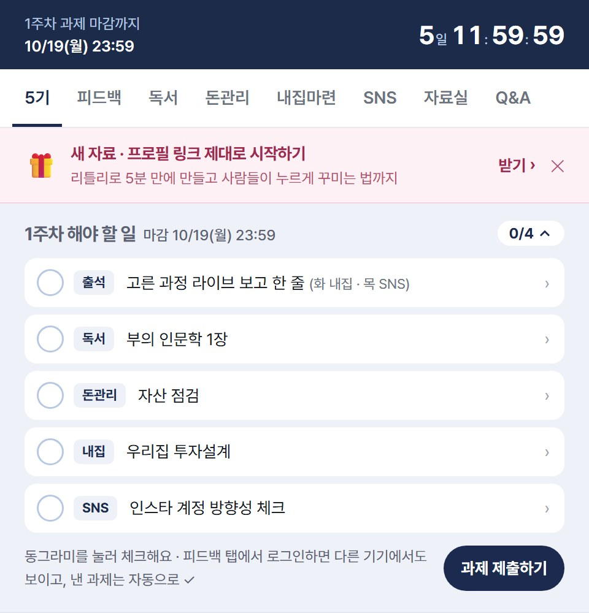
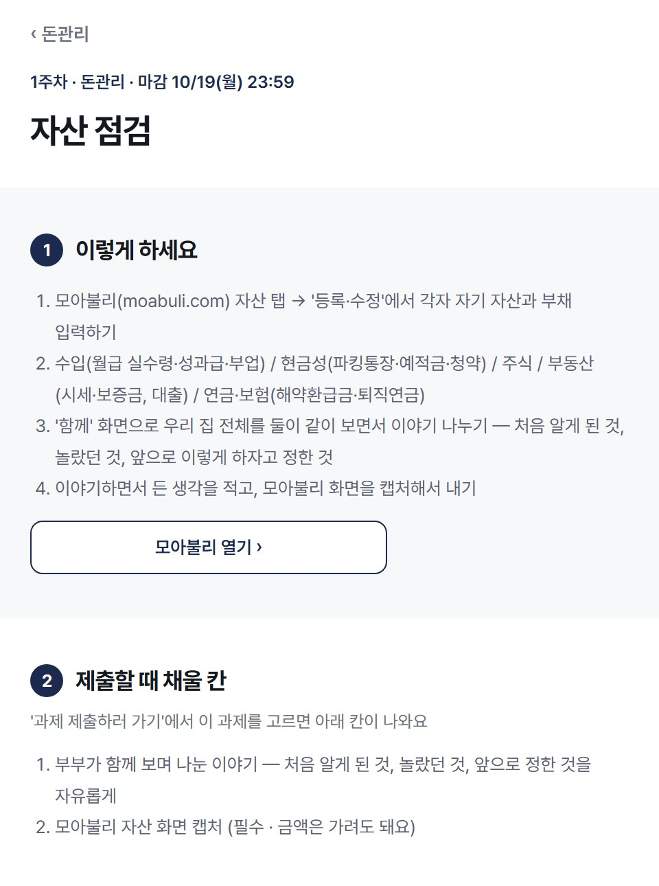
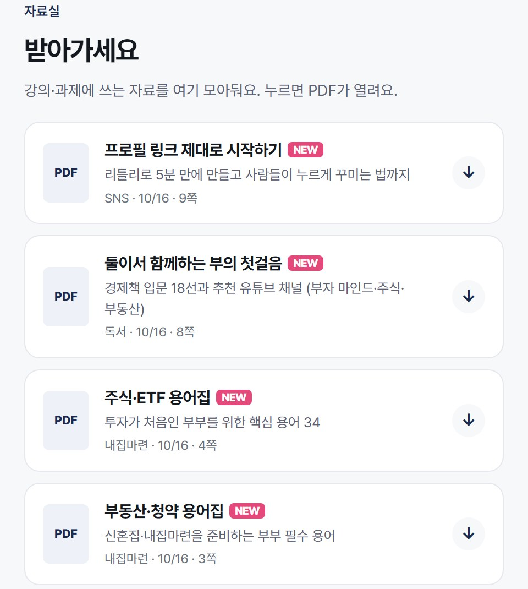

화요일 밤엔 내집마련, 목요일 밤엔 SNS 라이브. 못 오면 다시보기로 봐도 돼요.
요약 말고, 읽고 둘이 나눈 생각을 써요.
1주차는 자산 점검. 둘이 같이 화면을 보면서 처음 알게 된 걸 적어요.
우리 집 투자 설계를 하거나, 인스타 계정 방향을 잡아요. 둘 중 하나만 고르면 돼요.

과제방 첫 화면. 이번 주 할 일이 맨 위에 떠요.
공유에 동의해 주신 과제에서 한두 문장만 옮겼어요.
"이전 강의만 듣고 통장을 합쳤으면 정말 후회했겠구나, 이번 원팀 프로젝트를 결제하길 정말 잘했다고 생각했습니다."
5기 부부 · OT 강의 출석"처음 알게 된 것: 우리의 총 자산을 직접 눈으로 본 것. 놀랐던 것: 통신비 고정비가 필요 이상으로 너무 많이 나온 것."
5기 부부 · 1주차 돈관리 (자산 점검)"결혼한 지 한 달 만에 시작을 잘 한 것 같아 다행이라는 생각이 들었습니다."
5기 부부 · 1주차 강의 출석"변동지출이 더 줄이기 쉬울 거라고 생각했는데, 고정지출부터 자세히 파악해봐야겠다는 생각이 들었습니다."
5기 부부 · OT 강의 출석"'첫 술에 배부르랴'라는 말처럼 앞으로 더 많이 공부하고 하나씩 알아가야겠다고 다짐하게 되었어요."
5기 부부 · 1주차 강의 출석"서로 이야기하면서 경제 상황을 공유하고, 어떤 스타일인지도 맞춰가는 시간이 될 것 같은 생각이 들었습니다."
5기 부부 · 1주차 독서"다른 부부들은 어느 정도의 생활비나 저금을 하는지 예시를 볼 수 있어서 좋았습니다."
5기 부부 · OT 강의 출석"서로의 통신비와 보험비를 우선으로 재검토해서 줄일 부분이 있는지 찾아보겠습니다!"
5기 부부 · OT 강의 출석MVP는 매주 결영이네가 고르는 '이번 주에 제일 잘한 과제'예요.
질문은 닉네임 없이 과제방 Q&A에 올라가서, 다른 부부들도 같이 봐요.

과제 안내 화면. 하는 순서와 제출할 때 채울 칸이 나와요.

자료실. 강의·과제에 쓰는 PDF를 모아뒀어요.
6기는 11월 17일에 시작해요.
20팀만 함께해요.
이 페이지의 과제 문장은 공유에 동의해 주신 5기 부부들의 글이에요.